The Blog
Moss is boss!
All-moss terrariums are so much fun to make! It is really easy to turn a chunk of moss into a living terrarium hill-side or cluster of bushes or a vast, green lawn for miniature people to interact with. The landscape possibilities are endless and so effective. Here are my first attempts with all moss and nothing but:
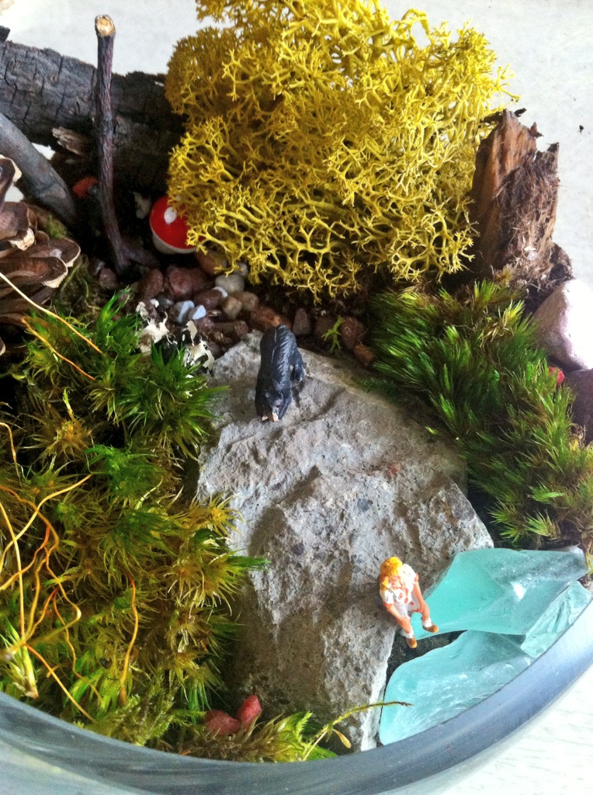 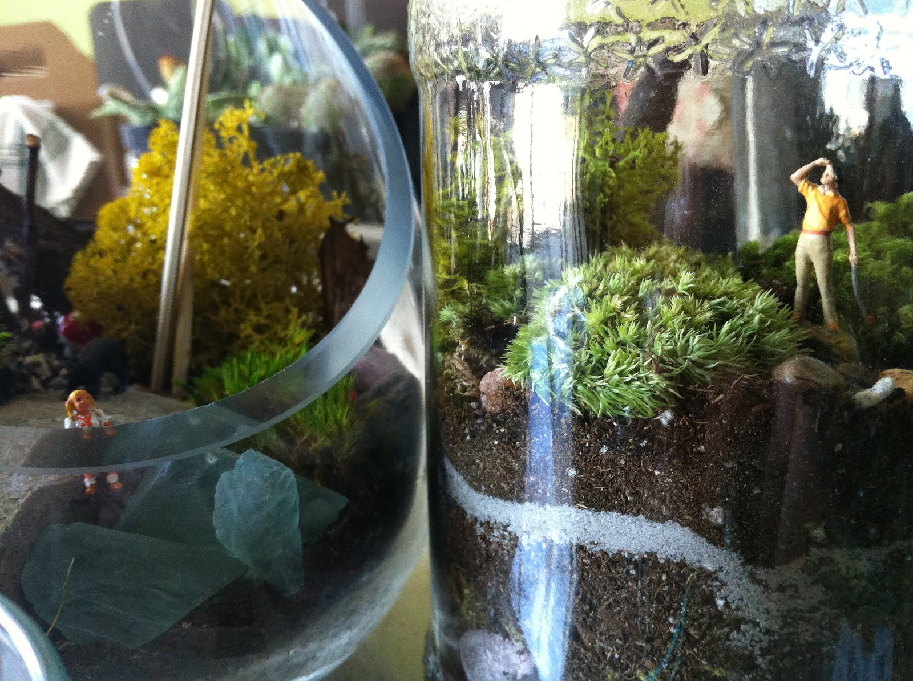 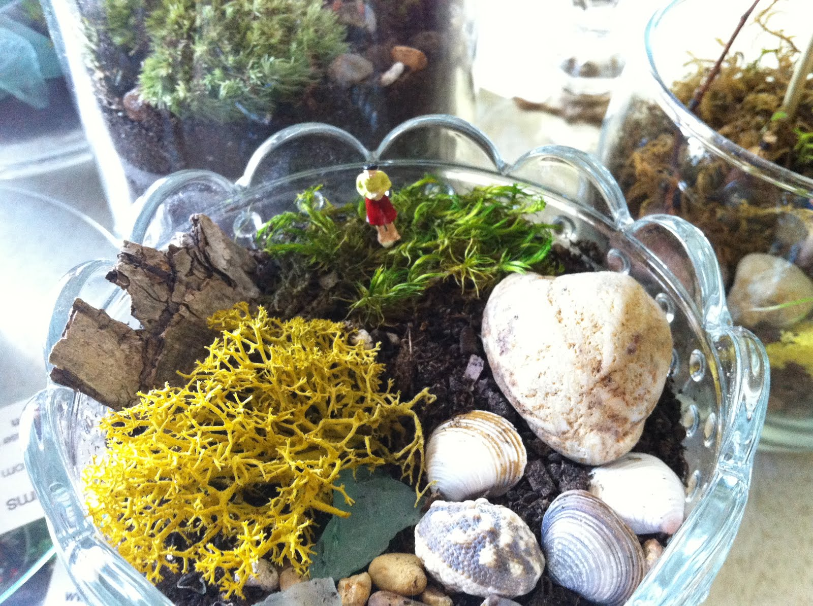Moss comes in many different textures and colours and can be found almost anywhere...wood, rocks, clay, swamps, and even in sidewalk cracks. My dad and I went foraging for moss this summer in Muskoka and managed to score bags of the stuff. We got eaten alive by mosquitoes in the woods, but I think it was worth it.
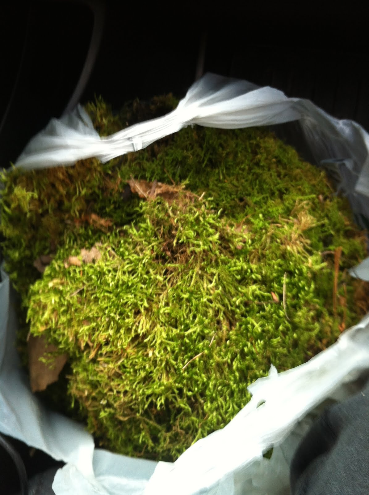 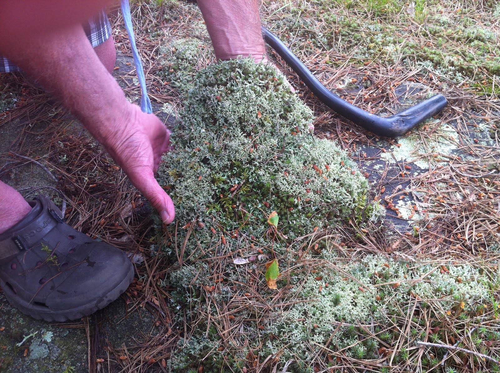 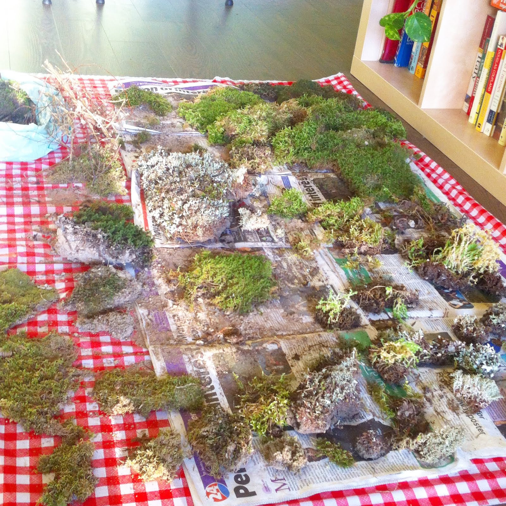Interesting facts about moss that make it so enchanting:
1) Instead of roots, moss has rhizoids which anchor it to the ground. 2) When feeling stressed, moss is able to chill out and stop growing for a bit. 3) Because of its absorbent nature, mosses were used as bandages during WWI to prevent blood loss. As a bonus, anti-bacterial properties of moss worked to heal infection. 4) A long time ago, dried moss was used to heat homes and live mosses provided insulation for boots in cold weather. 5) Depending on the species, moss can live anywhere from a few to 10 years.Perhaps the most intriguing characteristic of moss is how simple it is to care for. Moss terrariums can often thrive with no human interception...no water, special light or temperature demands. Perfect for the office!
Click here for nominal care instructions.Long time, no blog.
Now that everything has calmed down since the Toronto Indie Arts Market at the Gladstone a few weeks back (my first ever showing!), I should probably mention something about it here. It was so much FUN!!!
I got stuck in the very back of the Melody Bar, which was super dark, so these are the best photos I got (I also need a new camera), but you get the idea:
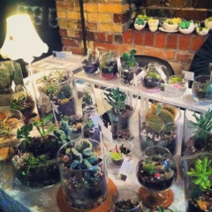 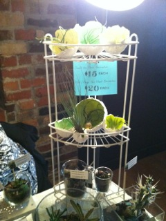I had lots of visits from some very special friends and was so excited to discuss terrariums with a bunch of strangers too. I learned a lot and hope to take part in another show this summer, at some point, at some place.
I have made a few terrariums that are a little on the grisly side and was pleasantly surprised that people responded very positively to these ones. Weird. I suppose I like them because I love contrast in general…attributing properties to things you wouldn’t expect off the bat. It is important to be reminded that things aren’t always as they seem and to be challenged to consider approaches other than the obvious. Combining bloody murder scenes with beautiful, green, lively, evolving plants in a terrarium expresses the dichotomy of life and death. The cheery paired with the bloody make these terrariums more intense and dynamic…for those who enjoy that sort of thing. I didn’t realize I was doing it until after I had done it...I thought I was just being a little cheeky
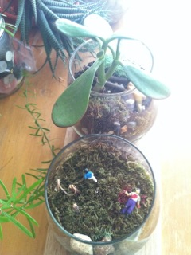But, don’t worry….I will continue to assemble piles of pretty terrariums as well
I've been a busy bee all week long, putting the finishing touches on all my terrariums, stamping bags and making price tags. Toronto Indie Arts Market in 2 days!!! Super excited!
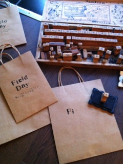This is my floor right now:
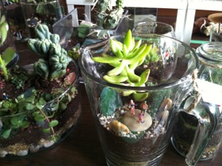I have had terrariums covering all possible surfaces in my living space for several weeks now and it is going to feel so empty in here without them. I've actually grown quite attached to many of them and will miss them lots, although it will be nice to have my table-tops, armchairs and floor space back...until I acquire more spring-time succulents...and so on and so on.
Here is my current favourite terrarium I made just this past weekend. It features dudes playing chess.
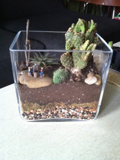As Ferris Bueller would say, "You are not cool if you are not at the Gladstone."
It is still really cold in Toronto today...still parka and cold feet weather.
While misting my air plants and saying hello to my succulents this morning, I noticed some spring blossoms! This must be a sign. Plants are pretty smart. Get ready for spring everybody! It's so close...
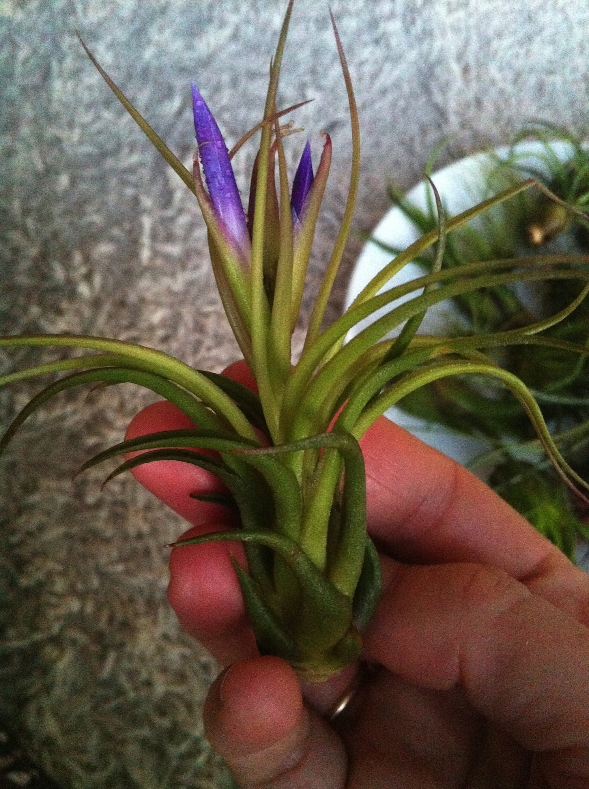 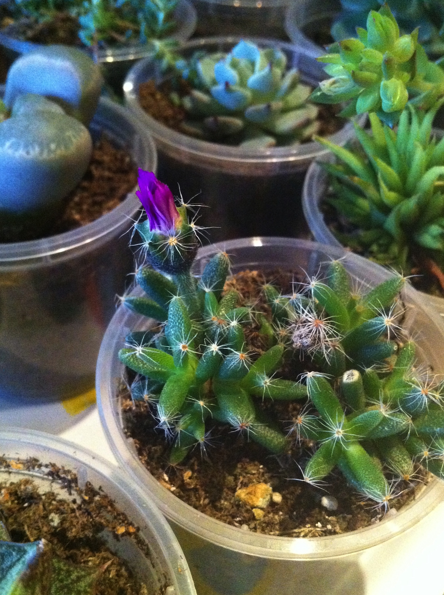My air plants enjoyed a nice bath this past weekend (there is water on that plate).
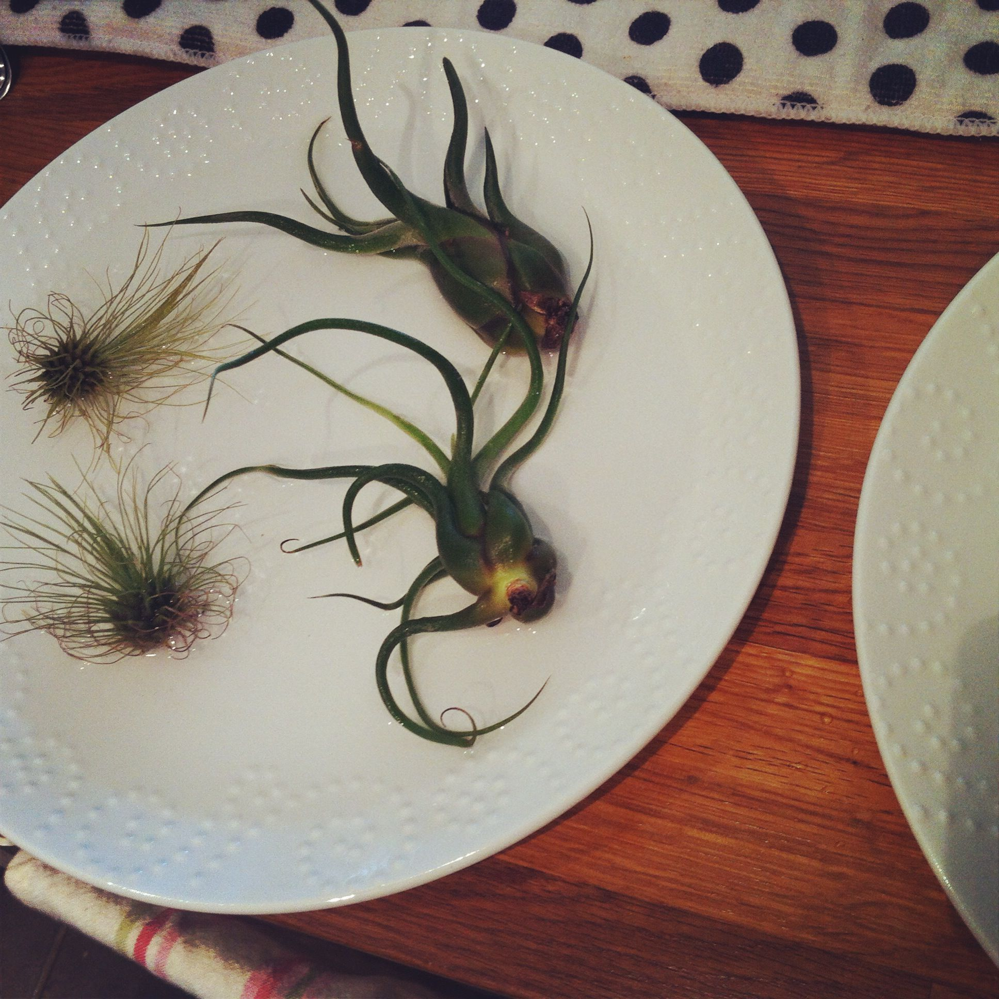I still remember the first time I saw air plants in person. I was, and continue to be, so intrigued by these other worldly looking plants that are alive, yet not planted in soil, seeming to survive on nothing at all. It turns out their leaves, not their roots, absorb water and nutrients from the air, not the dirt. This translates into an extremely flexible plant that is able to survive pretty much anywhere you want it to. They are happy sitting on a shelf or hanging from the ceiling or on a plate or in any type of pretty container. And, super easy to look after too...just some gentle mists of water and the occassional good soak (more details here)
And, the magic continues! On occasion, you’ll be surprised by a sudden, bright bloom on your air plant, which means it’s pregnant. This flowering will only happen once, but never fear! Although the mother plant will eventually dry up and pass on, the blooms lead to pups (little baby air plants) that can be removed gently from the mother as they grow. The mum can continue to produce pups for years after the initial flowering! It’s like mad science!
I’ve actually noticed one of my air plants is growing a pup for me. She bloomed almost a year ago and it looks like this pup is almost ready to have the cord cut...I’ll just let it grow a little bit more.
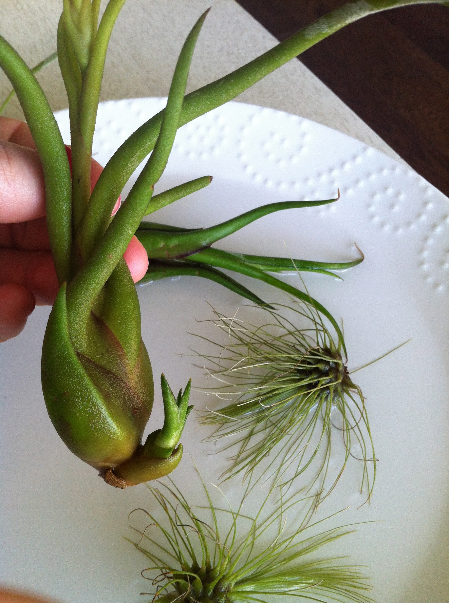Getting their new barnacle homes all ready for them for the upcoming Toronto Indie Arts Market:
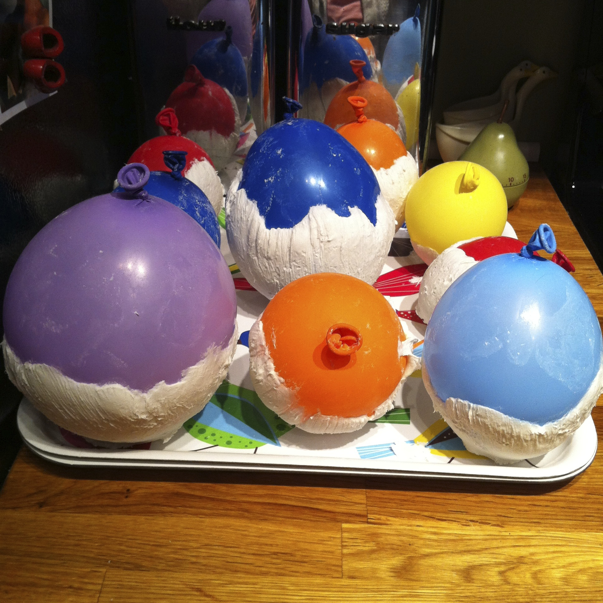First off, I'm super excited (and a little terrified) to announce that I got a table at the upcoming Toronto Indie Arts Market! Check out torontoindieartsmarket for all the important details. Hope to see you there!
One of the things I enjoy most about housing terrariums is the science in my living room aspect. It is so rewarding to notice new growth on plants that have been hanging out here for months and months. They all change all the time, which is very exciting and makes me feel like a good mom of sorts. Here are some awesome examples:
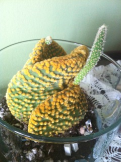That tall, skinny hat and the little, nubby one weren't on these cacti when I brought them home.
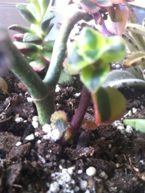That smaller, brown stem is brand new!
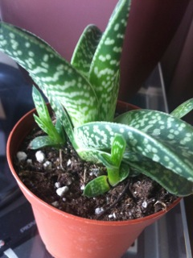This used to be just 1 big succulent, without those little guys in the front.
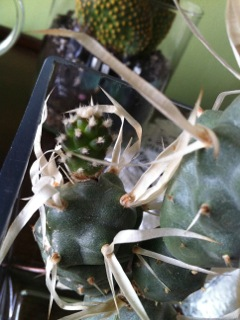See that little guy growing out the top? New!
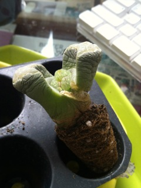This one is the coolest. This Lithops (but I call it a little brain) is transforming before my eyes. It doesn't look so great right now, but that's just because it is shedding like a snake; the new leaves pushing the old, shrivelled ones aside! So tough to not just pull the withered, outer leaves off, but I'll let nature do its work. So close!
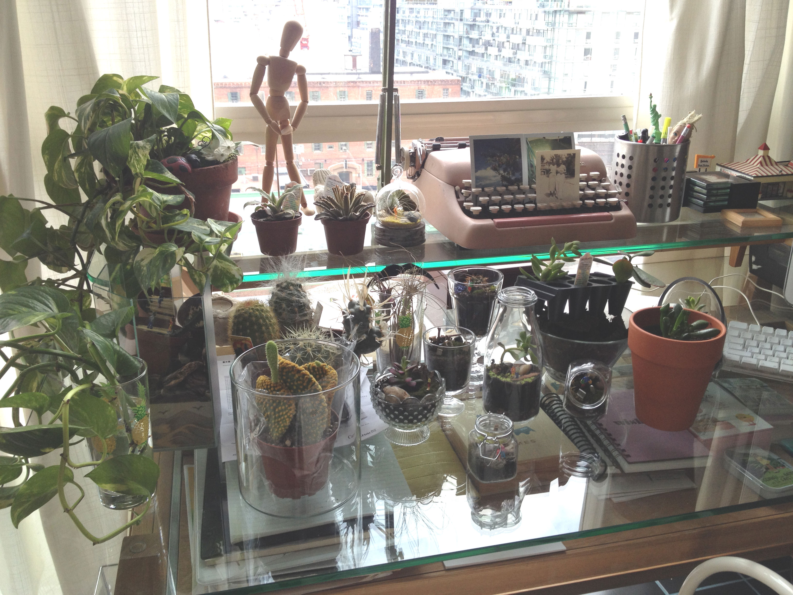Thank you to everybody who has listened to me go on and on about terrariums for the past several months. Extra big hugs and kisses to Heidi Athay for taking some glorious photos and to Jared Phillips for turning my website dreams into website reality. Couldn't have done it without you both. xo
I continue to be engrossed in terrariums...judging the merit of everything I see based on its ability to either house a terrarium or be inserted into a terrarium. My favourite part so far is seeking out the parts, although I do enjoy putting them together as well. It gets a little messy, but it is so fun!
I'm hoping to get out there to showcase these terrariums because I'm running out of room to store them here and because I'd like to share the love. Stay tuned.
Rachel.